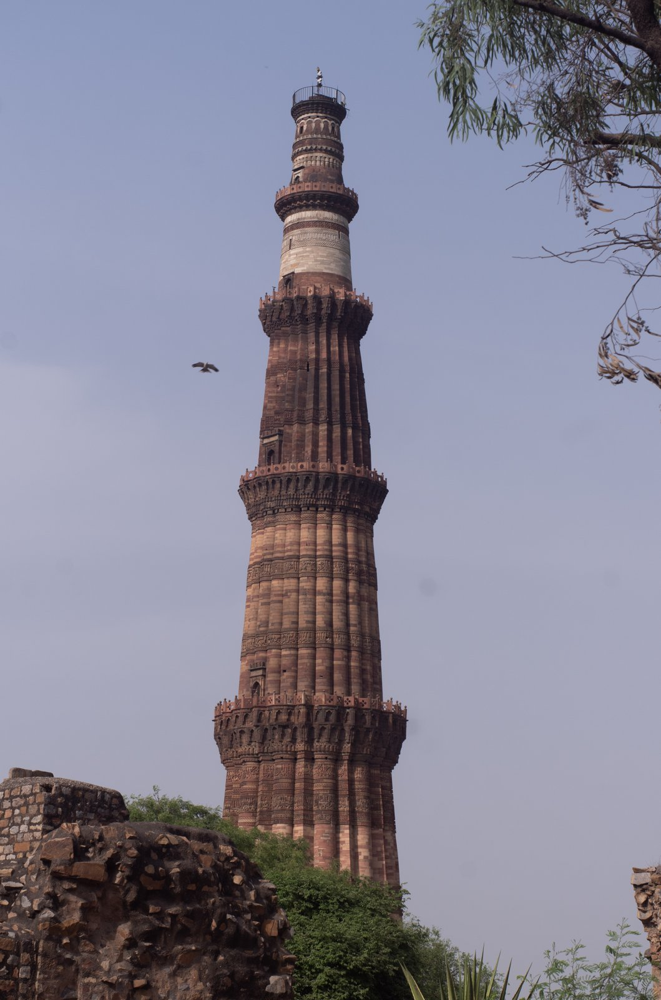
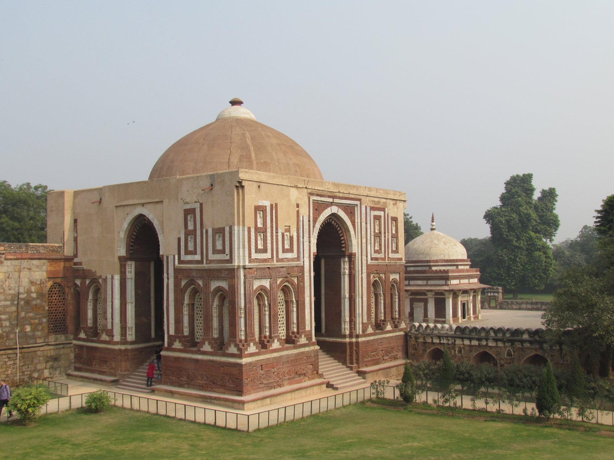

Image Viewer
Full Architectural & Epigraphical Inspection
100%
Medieval Indian History • Module 9: The Delhi Sultanate
Spanning over three centuries across five successive dynasties (Slave, Khalji, Tughlaq, Sayyid, and Lodi), the Delhi Sultanate established centralized Turko-Afghan rule. From Iltutmish's silver Tanka and Balban's Blood & Iron, to Alauddin Khalji's revolutionary market price regulations and Muhammad bin Tughlaq's visionary experiments, it laid the administrative and architectural foundation of medieval India.

UNESCO World Heritage monument symbolizing the triumph and genesis of the Delhi Sultanate.
Detailed breakdown of reigns, administrative innovations, and key historical milestones.
Founded by Qutbuddin Aibak (titled *Lakhbaksh*). Real consolidation achieved by Shamsuddin Iltutmish who saved India from Chengiz Khan and introduced the silver *Tanka* and copper *Jital*.
Founded by Jalaluddin Khalji. Zenith attained under his nephew Alauddin Khalji (1296–1316 AD) who assumed the grand title of Sikandar-i-Sani (Second Alexander).
Founded by Ghiyasuddin Tughlaq. Longest ruling dynasty of the Sultanate (94 years). Marked by extraordinary intellectual boldness and tragic administrative debacles.
Claimed descent from Prophet Muhammad. Founded by Khizr Khan (1414–1421 AD), who was appointed Governor of Multan by Timur. Refused the title of Sultan, styling himself Raiyat-i-Ala.
Founded by Bahlol Lodi. The most capable sovereign was Sikandar Lodi (1489–1517 AD):
Founded the city of Agra to exercise tighter control over Rajasthan; shifted imperial capital from Delhi to Agra in 1506 AD.
Introduced standard land measurement yard *Gaz-i-Sikandari* (32 digits/30 inches). Composed Persian verses under pseudonym *Gulrukhi*.
The world’s earliest comprehensive state price-fixing and market stabilization system.
Established three distinct markets in Delhi:
Rigorous multi-tiered oversight to stamp out black-marketing and adulteration:
Revolutionized agrarian taxation to curb rural intermediaries (*Khuts*, *Muqaddams*, *Chaudharis*):
Visionary policies executed ahead of their time that met with catastrophic failure.
Increased land tax in fertile Ganga-Yamuna Doab precisely during a devastating famine, prompting widespread peasant rebellion. Established agricultural relief bureau Diwan-i-Kohi and agrarian loans (*Sondhar*).
Ordered entire population of Delhi to relocate 1,500 km south to Devagiri (renamed Daulatabad) to command South India. Countless perished on the grueling trek; ordered return to Delhi two years later.
Inspired by Kublai Khan of China, minted copper and brass coins giving them parity with silver *Tanka*. Because the royal mint lacked anti-counterfeiting marks, "every Hindu home turned into a mint", ruining state credit.
Envisioned conquering Central Asia and Iraq; mobilized a gargantuan army of 370,000 soldiers with one full year advance cash salary. When geopolitical conditions shifted, the expedition was abandoned.
Dispatched imperial force into Kumaon/Garhwal Himalayan hills to secure northern border against Chinese incursions. The mountain rains and guerilla ambushes wiped out virtually the entire army.
Introduction of the arch, dome, minaret, red sandstone, and Persianized classical music.
Commenced 1199 AD; incorporates Quwwat-ul-Islam mosque and Iltutmish’s tomb.

Zoom DetailFirst authentic scientific dome and horseshoe arch constructed in the subcontinent.
Disciple of Hazrat Nizamuddin Auliya; served at the imperial courts of 7 Sultans (from Balban to Ghiyasuddin Tughlaq).
Master every question on Iltutmish, Balban, Alauddin Khalji, Tughlaq, and Lodi dynasties.
Loading flashcard...
Click card to reveal answerLoading answer...
Click to flip backLoading quiz question...
Full Architectural & Epigraphical Inspection